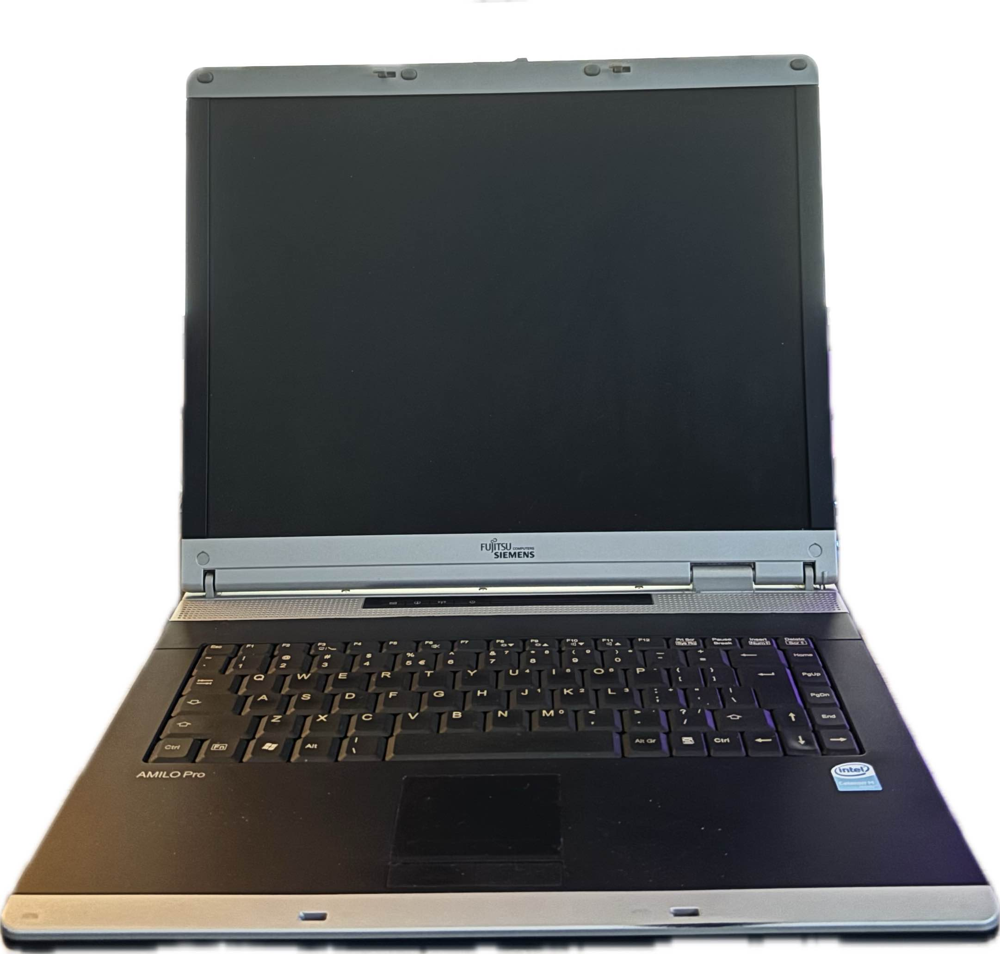
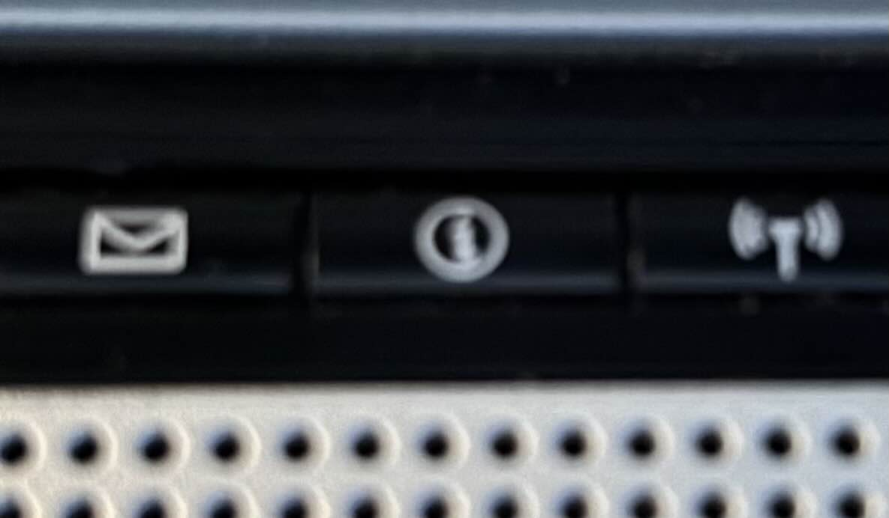
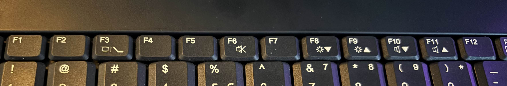

Name : Fujitsu Siemens AMILO Pro V2030
CPU : Celeron M 1.5Ghz
GPU : 64Mb(vram)
RAM : 2Gb
CD/DVD : yes
FDD : no
Dial-Up : yes
Ethernet : yes
Wifi : yes
Functional Battery : yes
Additional Buttons : yes
Additional Buttons List : Mail, ⓘ Button, Wifi On/Off Button
Function Buttons : yes
Function Buttons List : F3 - Change Video Output, F6 - Mute, F8 - Brightness Down, F9 - Brightness Up, F10 - Volume Down, F11 - Volume Up,
  